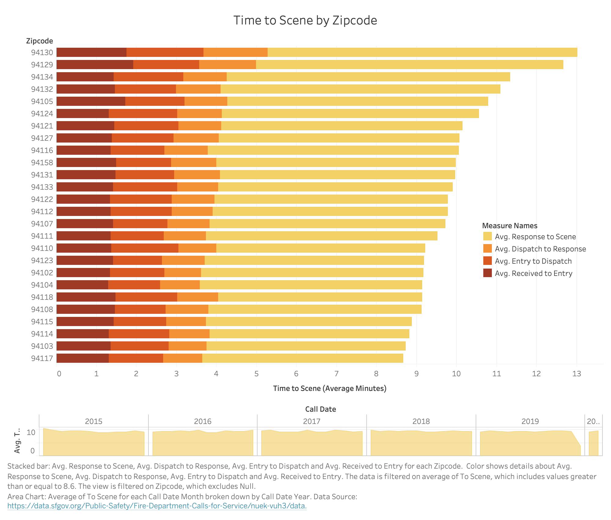
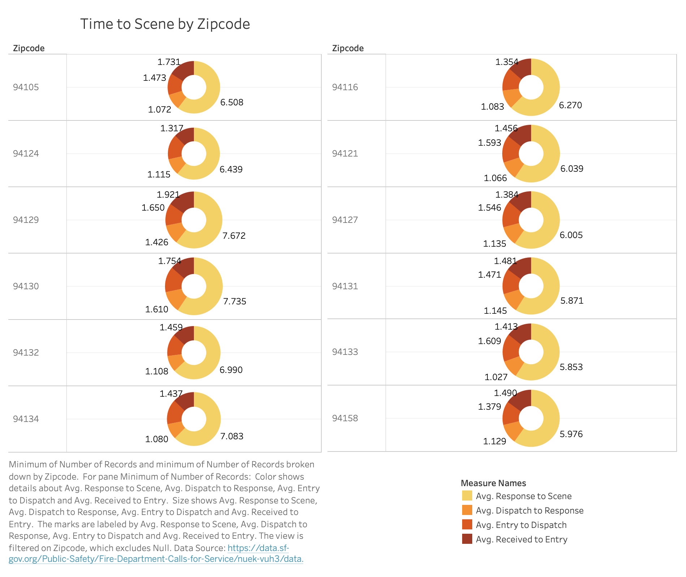

Time to scene
Goal
The visualizations on this page have an emphasis the amount of time it took for the the Fire Department to get on the scene. This is divided by zip code. The goal of the visualization is to evaluate which locations receives the relatively slowest service. It is also important to see how the time to on scene is divided (transportation to a destination may account for delays).
Wrangling
This data represents points from 2015 onward. More information about the data can be found here. No additional special wrangling has been done for the visualizations on this page. Note that the Zipcodes that are shown are the slowest average to scene zipcodes. The bar chart has the top 26 slowest and the pie chart has the top 12. The bar chart is sorted but the pie chart has no particular ordering.
Tableau Prototype
Created withPrototype 1
Prototype 2
Theme Analysis
Prototype 1
The bar chart is intended to show the average amount of time it took for the Fire Department to arrive at the scene. This is broken down into each step it took from response to entry to dispatch to response to the scene. For more information about what these fields mean, see the data section. From this chart we area able to see the areas with the slowest to scene reaction times. In addition, we are able to see the breakdown of the steps it took to reach the scene.
Prototype 2
While the stacked bar chart is able to clearly show the slowest "to scene" times, it doesn't show parts of a whole very well. In specific, it is difficult to see how much of the "to scene" time was spent from dispatch to scene or any other time segment. In order to supplement this, a small multiples donut chart encoded similarly was added. The small multiples pie chart aims to show more about how the time is broken up.
Planned Interactivity
Prototype 1
The area chart underneath the stacked bar chart is meant for interactivity. While it shows the average time to scene as an area, it will also serve as a selection window. The points that are brushed, will be reflected in the stacked bar chart. The bar chart itself will be selectable by measure. Ideally, the legend will also be interactable with brushed measures in the bar chart.
Prototype 2
The interactions of the pie chart will be more simplistic. Each slice of the donut will brush the given measure. The legend will work similarly.